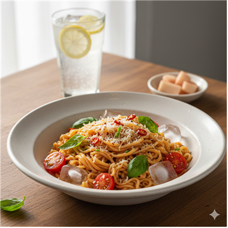
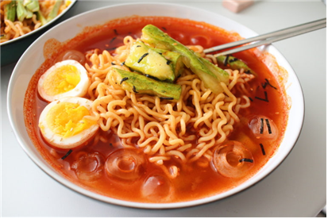
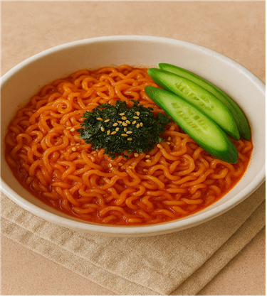

❄️ 시원한 불닭 레시피

얼음물로 찬바람 맞은 불닭면을 양상추·오이·토마토 위에 착지시키고, 불닭+오리엔탈 폭격 소스 뿌려 상큼불맛 샐러드 완성!

얼음물로 정신 번쩍 난 불닭면에 레몬 올리브 오일 드레싱 입히고, 토마토·바질 얹어 상큼하게 폭주하는 불닭 파스타 완성!

얼음물 목욕한 불닭면에 요거트·마요 고소폭탄 소스 입히고 오이채 샤라락 얹어 시원하고 미친 매콤함 발사!

물 샤워한 불닭면에 소스 바르고 냉면 육수 부어서 얼음 폭포 매운맛 냉불닭 완성!

얼음물로 정신 차린 불닭면에 참깨·김가루 팍 뿌려 고소한 한방 날리는 불맛 비빔면 완성!